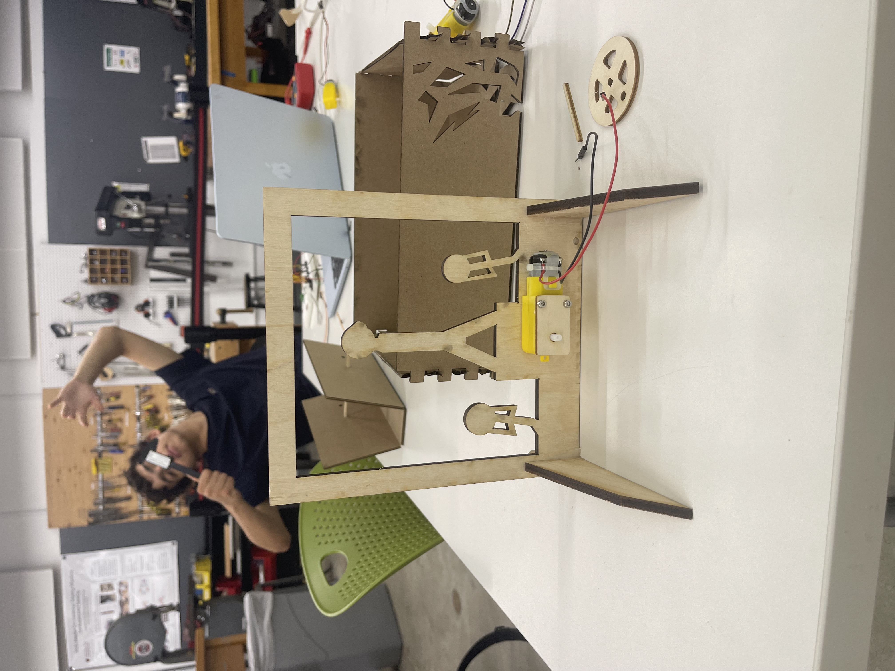

Create a kinetic sculpture that contains circuitry. Make sure to include at least one video/gif in your documentation.
I created an F1 podium in which the first place is the only one happy, so he is moving his hands up and down as a true champion.
I used an adapted version of the Scotch Yoke to make my hands move up and down.
I initially spent too much time only on the design and forgot about how it would actually function. This made me have critical design flaws which needed to be fixed by hand. I remade holes multiple times for the motors. But the hardest part was making the whole move without having the Scotch Yoke get stuck in the first place. The calibration for that one wheel took me 4 hours. I had to remake and test small pieces multiple times.
In the end, I got it working, so it was all worth it.
If I were to give advice to my past self, it would be: don't focus on the design. The real problem is making it work, so focus on that.
